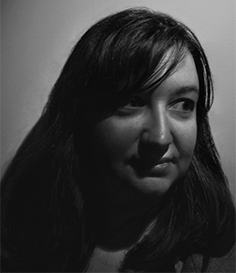

Ph.D. in Text & Technology
University of Central Florida · Winter Park FL
Expected Fall 2028
PhD Candidate · Educator · Writer · São Paulo → Orlando
Researching AI writing tools, multilingual literacy, and rhetoric — while never losing sight of the human voice at the center of every text.

// ABOUT · SOBRE MIM
A Brazilian-born academic and creative writer based in Kissimmee, FL. I research the intersections of AI writing tools, multilingual literacy, and rhetoric at UCF — while also publishing fiction, writing screenplays, and teaching composition. Formerly an Art Director in São Paulo for 8 years. I believe language is how we cross borders.
University of Central Florida · Winter Park FL
Expected Fall 2028
University of Central Florida
Fall 2024
University of Central Florida
Creative Writing + W&RFall 2022
Full Sail University
4.0 GPA · Valedictorian2018
ESPM · São Paulo, Brasil
2008
AILB — Academia Internacional de Literatura Brasileira
Member · Bilingual: English + Português
"AI Detectors Can Stop International Students from Plagiarizing: Educators Should Prioritize Conversation, Trust-Building, and Lived Experience as Part of Critical AI Literacy"
with Sherry Rankins-Robertson · Bad Ideas About AI and Writing
FORTHCOMING 2026
"What About the Writing Center?"
Monday Messages
APRIL 2023
"Building Communities Beyond Borders: The Translingual Practices of Transnational Fans of Korean Pop Culture"
Convergence/Rhetoric
FALL 2022
"Woes of First Sentences"
Just Write!, vol. 1, no. 1
MARCH 2021
"For Years, I Was Convinced That My Painful Periods Were Normal. They Weren't."
POPSUGAR
2019
"The Exquisite Artifacts of Sir Drustan the Bold"
The Wyldblood Magazine
JANUARY 2022
"Reheated Rice"
Olit Magazine
JANUARY 2022
"Death in the Kitchen"
Dime Show Review
2017
"Final Call"
Scarlet Leaf Review
2017
Mrs. Novak [short film]
Written by Priscila · Dir. Maria Rivas
2019
Soundproof & Compliance [short films]
Set Vision Studios
2018
← Use arrow keys or drag to explore →
FALL 2023 – PRESENT
Dept. of Writing & Rhetoric · UCF
FALL 2022 – SPRING 2023
Dept. of Writing & Rhetoric · UCF
FALL 2020 – FALL 2021
UCF Writing Center
JAN – DEC 2019
Underline Publishing · Beating Windward Press
2018 – 2019
POPSUGAR · Jornal Brasileiras & Brasileiros
2007 – 2015
Cornerstone Branding Brasil · São Paulo
"IA: tecnologia, comunicação e linguagem" (AI: Technology, Communication, and Language)
FOCUS BRASIL
"Machine Writing and the Work of Rhetoric and Composition — Open Roundtable"
2024 CCCC Fall Virtual Institute
"The Abundance of Global Black Rhetorics"
2024 CCCC Annual Convention · Spokane WA
"What Will AI Tools Like ChatGPT Mean for Composition Students, Teachers, and Programs?"
Composition Curriculum Alignment Meeting · UCF
"Building Communities Beyond Borders: Translingual Practices of Transnational K-Pop Fans"
Knights' Write · UCF
"Creator vs. Consumer: Applying Rhetorical Listening to Video Game Critiques"
Writing Fest UCF
"Os Desafios do Escritor Brasileiro em Língua Inglesa" (The Challenges Brazilian Writers Face When Writing in English)
Encontro de Escritores Brasileiros nos EUA · New York
Click a topic to highlight it
Adobe Photoshop · Illustrator · InDesign
Dreamweaver · Acrobat
Premiere · Avid · iMovie
HTML · CSS · WordPress · SEO
Microsoft Office Suite
Ren'Py · Twine (Game Design)
English — Proficient
Português — Fluente (nativo)
Fall 2020 · Spring 2021 · Spring 2022 — Perfect 4.0 GPA
Fall 2020
2018 — One recipient per graduating class
2018 — Transmedia, TV Writing, Horror/Mystery, Games, Portfolio & more
Finish Line Script Competition & Diversity Film Festival · 2020
2017 · Also: Dedication, Global Achievement & EMI Scholarships
"A linguagem é a nossa forma de atravessar fronteiras." Open to collaborations, speaking invitations, and conversations about the future of writing and AI.